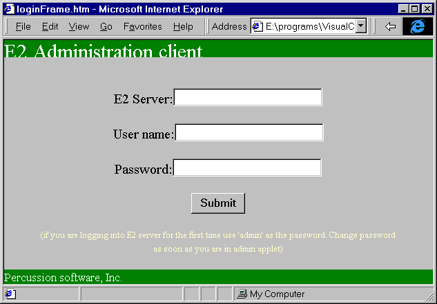
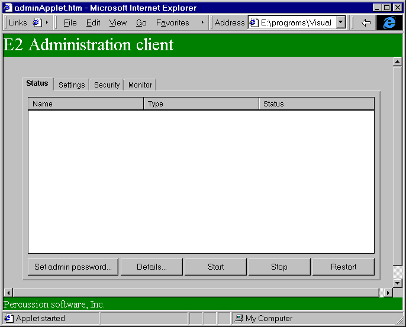
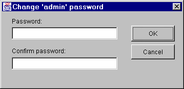

This package defines the Administration client UI for E2 server. The login page will be HTML with SSL connection to E2 server. Admin client will be invoked by the following URL
https://hostName/psxadmin.html.
This brings up the login page for E2 server administration. Enter user name and administration password. If this is the first time the admin client is called, use 'admin' for both user name and password. E2 server name field will be read only.

Pressing OK on this page sends the login request for E2 server with the following options.
http://hostName/E2Hook?psxaction=adminOpen&loginid=loginid&loginpw=loginpw
When the E2 server gets the request, it first verifies the that the login information to make sure that the user is indeed administrator for this server. If this is successful, E2 server send the page with admin applet. From this point on all the communication will be between admin Applet and E2 server.
E2 server name will be passed to the applet.

Note: If this is the first login into the admin client, the admin password should be changed from 'admin' to some valid password.
In case server is not running, an common error page will be returned to the browser.
For more details on administration applet see com.percussion.server.admin.PSAdminApplet class or follow the links for individual administration modules.
Status Server, Application status display. Commands to see more details of server \ application and to manage them Settings Handles E2 server configuration options related to Performance, data caching, log and Object store. Security Handles security related options like providers, roles, ACL, credentials and encryption Monitor Server monitoring and statistics.